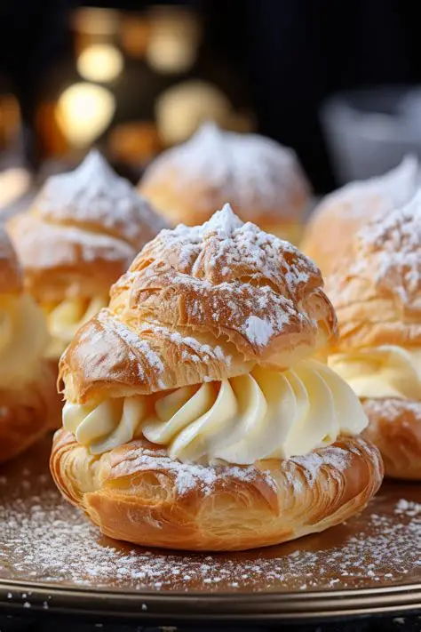

Home
Classic Cream Puff

Description
Cream puff is a light, airy pastry filled with sweet vanilla cream. This
classic French dessert is perfect for tea time or special occasions. The
choux pastry is baked until golden and crisp, then filled with a rich,
creamy custard or whipped cream.
Making cream puffs at home is easier than you think! With just a few
simple ingredients, you can enjoy these delightful treats fresh from your
own kitchen.
Ingredients
- 1/2 cup (120 ml) water
- 1/2 cup (120 ml) milk
- 1/2 cup (113 g) unsalted butter
- 1 tablespoon sugar
- 1/4 teaspoon salt
- 1 cup (125 g) all-purpose flour
- 4 large eggs
- 1 cup (240 ml) heavy cream
- 2 tablespoons powdered sugar
- 1 teaspoon vanilla extract
- Powdered sugar, for dusting (optional)
Steps
-
Preheat your oven to 200°C (400°F) and line a baking sheet with
parchment paper.
-
In a saucepan, combine water, milk, butter, sugar, and salt. Bring to a
boil over medium heat.
-
Remove from heat and add flour all at once. Stir vigorously until the
mixture forms a ball and pulls away from the sides of the pan.
-
Let the dough cool for 5 minutes, then add eggs one at a time, mixing
well after each addition until smooth and glossy.
-
Transfer the dough to a piping bag and pipe small mounds onto the
prepared baking sheet.
-
Bake for 20–25 minutes or until golden brown and puffed. Let cool
completely.
-
In a bowl, whip the heavy cream with powdered sugar and vanilla extract
until stiff peaks form.
-
Cut the cooled puffs in half and fill with whipped cream. Dust with
powdered sugar if desired. Serve immediately.